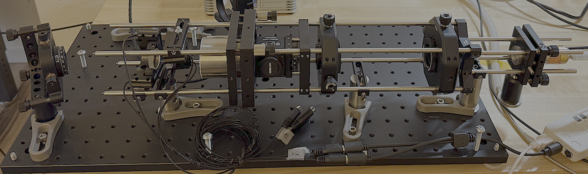
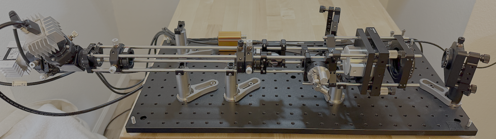

Second-Harmonic Dispersion Interferometer (SHDI),
CLOSE-OUT SALE PRICE: $28,900.00
We are closing the SHDI product line and selling our laboratory instrument for a deeply discounted price.
This instrument can
provide for repetitively-pulsed, 2-dimensional, density-profile imaging/measurements in plasma and gas,
where the areal-electron density is: ∫ nexdl ≥ 1014 cm-2, or the
areal-neutral density is: ∫ n0xdl ≥ 1016 cm-2. The SHDI's
lower-limit
sensitivity depends on the refractive index and thickness of the sample. The SHDI may also be used to
quantify the thickness
of optically transparent mediums such as liquids and solids. Multiple papers have been published by our
group documenting
the development of the SHDI and its use in the measurement of plasma density.1 - 5
Download the SHDI Brochure here.
The operating principles for the SHDI are schematically illustrated in the Figure shown below. The design
uses
a single, primary laser beam source and homodyne detection, which provides a common-beam path for all laser
beams.
In the first crystal (SH1) a second harmonic is created from the primary beam, allowing the sample to be
probed at two
wavelengths and producing a phase shift by optical dispersion. In the second crystal (SH2) another second
harmonic is
created that reproduces the phase shift of the residual primary beam, allowing the dispersive-phase shift to
be subsequently
measured between the two second-harmonic beams. The result is a single, common-path optical design that is
immune to
mechanical and electrical noise, is less complex and lower cost than alternative (dual-beam line)
interferometers. Moreover, the
entire instrument only needs one viewing path through the sample and can be mounted as two separable,
lightweight components
on the experimental device, or nearby with a direct line-of-sight.

Schematic illustration of a Second-Harmonic Dispersion Interferometer and its principles of operation.
The principal features and characteristics of the SHDI are as follows:
- Large vibration isolation tables are unnecessary, the optical units may be mounted directly on the experiment.
- The SHDI can measure large, and small sample sizes, with transverse dimensions from mm's - 10's of cm's .
- The time resolution can range from Δ t ~ ns - seconds, using an appropriate laser.
- The phase resolution measurement can range from as little as, Δ φ ~ 10-2 - radians.
- Bandwidth and sensitivity can be tailored for CW or pulsed measurements.
- The image recording times as short at 0.5 ns have been achieved.
- User-friendly software provides for quick-image visualization and data analysis.
- A complete system can be custom designed for the application, in order to keep costs low.
- Large sample gradients, beam deflections, and fringe jumps may limit the spatial resolution.
The complete SHDI is illustrated in the Figure below, with system rigidly mounted in a ThorLabs cage
system. In this
configuration the SHDI produces a 7-mm diameter probe beam, with the laser
mounted on the right end of the Optical Unit 1 (OU1) cage system and the digital cameras (i.e., signal
detectors)
mounted at the left end of Optical Unit 2 (OU2).
The object shown at the center is a pulsed gas valve which produced an uncollimated gas jet injected into
air, that was
sampled by the SHDI. The length of OU1 is approximately 400mm and the length of OU2 is approximately 500 mm;
the transverse width (for both OUs) is approximately 80 mm. The
laser-pulse duration is 0.6 ns and the repetitive sampling rate is 100 fps.
Other components mounted in this system include: beam-line optics to adjust the diameter of the laser beam
at various points in
the instrument; Thorlabs PIN photodiode to detect the beam; two LaB6 second harmonic crystals (10
x 10 mm); two crystal-oven heaters;
a programmable two-channel oven controller; piezo-electric optical-phase controllers; two Basler ACE
1920x1200 100 Hz
area scan digital cameras; a Quantum Composers 4-channel trigger unit to command trigger the laser and
cameras;
two (12" x 24") optical breadboards.

SHDI configured to produce a 7-mm diameter, laser-probe beam.
OU1 is on the right side and OU2 is on the left. A gas jet is produced between OU1 and OU2 by
a pulsed-gas valve.
An enhanced version of the SHDI is shown in the Figure below, where the laser-beam diameter
was increased to 35-mm diameter to allow for density-profile imaging of large-transverse area samples. In
this
configuration the beam is expanded prior to entering the sample using a mirror-beam expanders. An identical,
mirror-optics combination is after the sample to reduce the beam back to its original diameter.
The mirrored-beam expanders consist of a convex, first-surface mirror and an off-axis parabolic mirror.
All components, except for the parabolic mirror, are co-axially and rigidly mounted in a ThorLabs cage
system.

OU1 for the large-area beam SHDI (35-mm beam diameter).

OU2 for the large-area beam SHDI (35-mm beam diameter)
The measured performance for the above, large-area beam SHDI demonstrates that the probe-beam diameter can
be
increased beyond current levels, limited to the availability of suitable mirrored components. Employing the
use of
a newer series of fast-frame-rate digital cameras would allow the
instrument to provide near real time density imaging at frame rates approaching a kHz.
The SHDI system offered for sale here includes the all of the beam-line optics and hardware described above
and illustrated
in the figures. Also included is an extra pair of LaB6 crystals, as well as various extra optics
mounts,
lenses, beam expanders, pinholes, cage-mount components, etc.
The combined price for all of these h/w components is roughly one-third their original retail price.
The interferometer system also includes
the software operating system that is used for system alignment and density measurement.
All software is written in Python, for ease of understanding, maintenance, and modification.
Further information on the operation and design of the SHDI interferometer are available by contacting us
at the coordinates indicated below.
CLOSE-OUT SALE PRICE: $28,900.00
REFERENECES
1 F. Brandi, F. Giammanco, W. S. Harris, T. Roche, E. Trask, and F. J. Wessel,``Electron density measurements of a field-reversed configuration plasma using a novel compact ultra-stable second-harmonic interferometer,'' Review of Scientific Instruments, V.80, N.11, p. 113501, 2009. https://aip.scitation.org/doi/full/10.1063/1.3258199
2 F. Brandi, F. Wessel, C. Lohff, J. Duff, and Z. Haralson, ``Experimental study on the performances of second-harmonic dispersion interferometers at 10.6 um and 1064 nm for plasma density measurements,'' Applied Optics, V.59, pp. 8486 - 8493, 2020. http://ao.osa.org/abstract.cfm?URI=ao-59-27-8486
http://ao.osa.org/abstract.cfm?URI=ao-59-27-8486
3 F. Brandi and F. J. Wessel, ``Widefield quantitative phase imaging by second-harmonic dispersion interferometry,'' Optics Letters, V.45, N.15, pp. 4304 - 4307, 2020. https://opg.optica.org/ol/fulltext.cfm?uri=ol-45-15-4304&id=433908
4 C. T. Chavez, A. Egly, I. Sepulveda, and F. J. Wessel, ``Measurement of 2D density profiles using a second-harmonic, dispersion interferometer,'' Rev. Sci. Inst., V.94, N.2, p. 023503, 2023. https://doi.org/10.1063/5.0119896
5 F. J. Wessel, C. T. Chavez, and A. Egly, ``Density-profile imaging using a second harmonic dispersion interferometer configured with reflective-beam expanders,'' Rev. Sci. Inst., V.95, N10, p. 103520, 2024. https://doi.org/10.1063/5.0218760